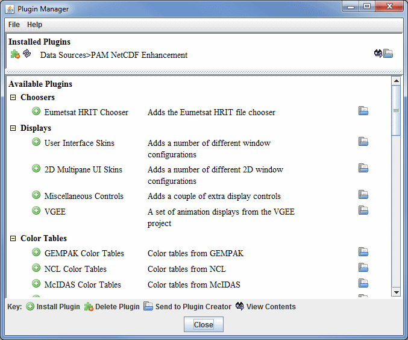
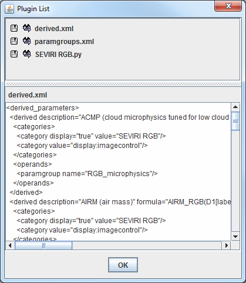

Plugin Manager
McIDAS-V plugins are a way to add to or modify the functionality of McIDAS-V. Plugins can range from adding new resources (e.g., color tables, layout models, maps) to changing the entire application. Plugins are typically Java JAR archive files that can contain a set of McIDAS-V resources and Java code. They are kept in a special directory on disk and are loaded at run time.
Plugin Command Line Arguments
You can load a plugin (one time only) with the:
-plugin <plugin file or URL>
command line argument.
You can install a plugin with the:
-installplugin <plugin file or URL>
command line argument.
You can start McIDAS-V without any plugins with the:
-noplugins
command line argument.
Plugin Manager
The Plugin Manager, accessed through the Tools->Plugins->Manage... menu item in the Main Display window,
allows you to list, install, and manage plugins.

Image 1: Plugin Manager
A list of the installed plugins is shown at the top of the Plugin Manager, and a list of available plugins is shown below that. Click on an icon to perform an action in the Plugin Manager:
-
 Install Plugin - Installs the selected plugin in the Available Plugins section. You can install plugins that are not in this list through the File->Install
Plugin from File and File->Install
Plugin from URL menu items in the Plugin Manager window. When you install a plugin you will need to restart
McIDAS-V for the plugin to take effect.
Install Plugin - Installs the selected plugin in the Available Plugins section. You can install plugins that are not in this list through the File->Install
Plugin from File and File->Install
Plugin from URL menu items in the Plugin Manager window. When you install a plugin you will need to restart
McIDAS-V for the plugin to take effect.
 Uninstall Plugin - Uninstalls the selected plugin. When a plugin is removed, McIDAS-V must be restarted for it to take effect through the session. Once McIDAS-V is restarted, the plugin will still be listed in the Available Plugins list and can be reinstalled at any time.
Uninstall Plugin - Uninstalls the selected plugin. When a plugin is removed, McIDAS-V must be restarted for it to take effect through the session. Once McIDAS-V is restarted, the plugin will still be listed in the Available Plugins list and can be reinstalled at any time. Send to Plugin Creator - Directs you to the Plugin Creator, where modifications to the plugin can be made.
Send to Plugin Creator - Directs you to the Plugin Creator, where modifications to the plugin can be made. View Contents - Opens the Plugin List dialog, which allows you to list the files that the plugin contains. You can view the contents of a file and/or export a file through this dialog.
View Contents - Opens the Plugin List dialog, which allows you to list the files that the plugin contains. You can view the contents of a file and/or export a file through this dialog.

Image 2: Plugin List Dialog
Menus
There are a few menu items that are unique to this tool.
The File menu has these unique options:
- Install Plugin from File - Opens a window that allows you to load a local *.jar plugin into McIDAS-V.
- Install Plugin from URL - Opens a window that allows you to enter a URL that points to a plugin that will be brought into McIDAS-V.
The Help menu has this unique option:
- Plugin Manager - Opens the Plugin Manager help page in the User's Guide.